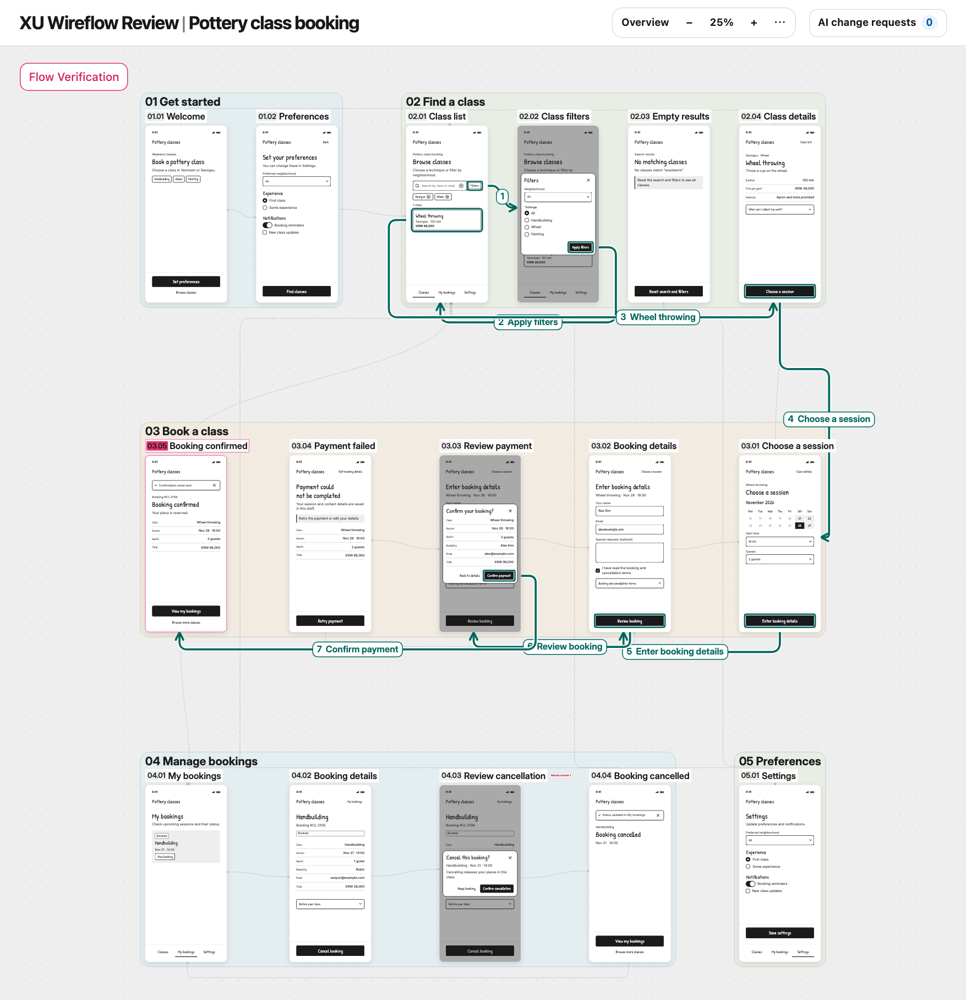
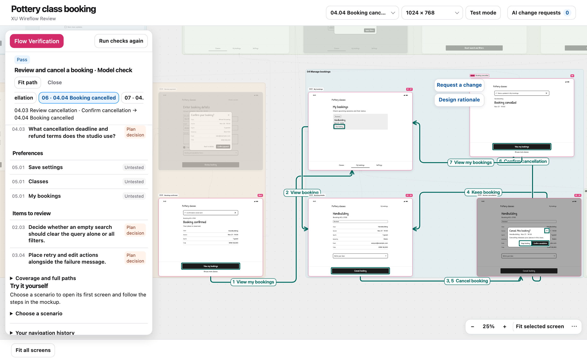

XU Wireflow Review
앱을 기획하는 누구나 화면 구조와 사용자 흐름을 점검할 수 있는 AI 스킬입니다. 기획 메모나 기존 화면을 바탕으로 단순한 더미 화면들을 화살표로 연결한 와이어플로우를 만듭니다. 시각 디자인을 정하기 전에 버튼을 직접 눌러 보며 화면이 자연스럽게 이어지는지, 빠진 단계는 없는지 확인하세요.


Open the English demo · 한국어 예제
앱을 기획하는 누구나 화면 구조와 사용자 흐름을 점검할 수 있는 AI 스킬입니다. 기획 메모나 기존 화면을 바탕으로 단순한 더미 화면들을 화살표로 연결한 와이어플로우를 만듭니다. 시각 디자인을 정하기 전에 버튼을 직접 눌러 보며 화면이 자연스럽게 이어지는지, 빠진 단계는 없는지 확인하세요.


Open the English demo · 한국어 예제